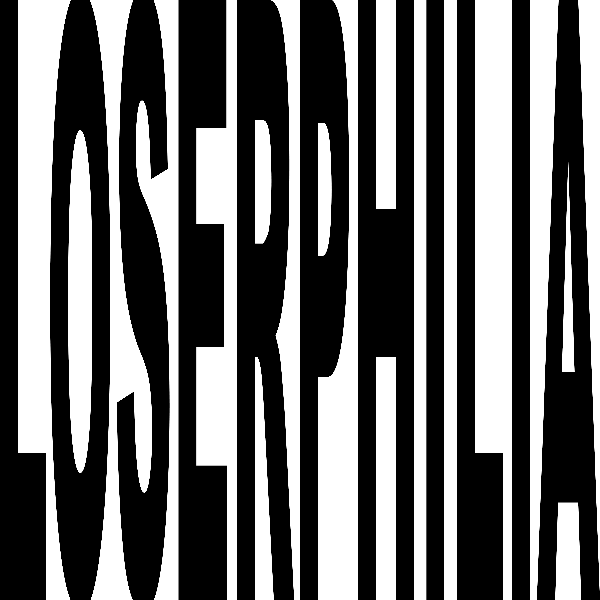
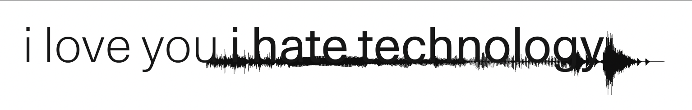

Elderly care is an often overlooked field, where fragmented communication and overworked staff leave families with limited visibility into resident wellbeing. SharedCare addresses this through an elderly care portal that improves transparency and family-facility communication.
Built as a capstone team project, SharedCare was a collaboration across research, design, and development. I served as project manager, coordinating timelines and keeping the team aligned from discovery through delivery — while also contributing directly as a designer through logo creation, UX research, and interface design.

goals
- reduce communication gaps between care staff and families
- give caregivers a clear, low friction workflow
- provide families real-time visibility into resident wellbeing
- design for non technical users in stressful environments
process
- conducted interviews with caregivers and family members
- mapped pain points in current communication workflows
- built low-fi wireframes, iterated based on feedback
- developed high-fi prototype with dual staff/family views
- ran usability testing sessions and refined the interface
my contributions
- led project management — ran standups, maintained the timeline and scope
- designed the SharedCare logo and visual identity
- conducted and synthesized UX research interviews
- contributed to wireframing and UX decisions
key takeaways
- caregivers need quick glance interfaces, not dense dashboards
- families value frequency of updates over depth of detail
- trust is built through consistency, not just features
next Steps
- automate daily summary notifications for families
- expand scheduling module with shift handoff notes
- integrate with existing care management systems
My passion projects include logo design and building visual identities. These are a few recent pieces, each built around a distinct typographic or conceptual direction.

A logo built on extreme horizontal compression. The letters stretched and stacked into a dense typographic block.

A mark designed for a music platform, built to work on dark backgrounds. The form is reduced to its essentials with minimal detail, a strong silhouette and high contrast.

A logo that layers two conflicting statements, with a waveform running through the text as a visual metaphor for signal and noise. The contrast between the light and heavy type weights mirrors the tension in the phrase itself.